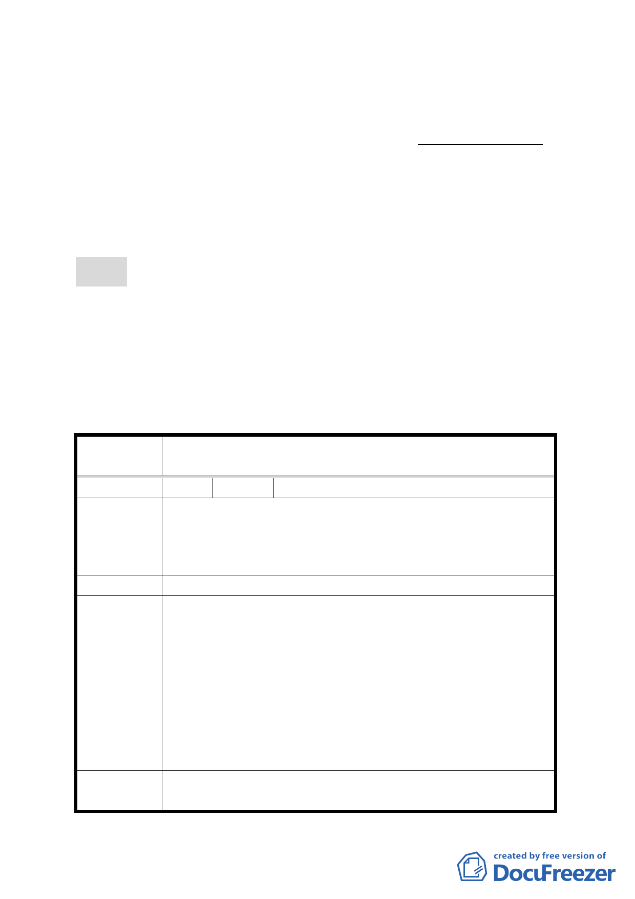

計畫。
（二） 擬依大眾捷運法第 19 條及其子法辦理大眾捷運系統需穿
越私有土地上空部分使用空間範圍以徵收地上權方式使
用。
六、 市府以 97 年 4 月 30 日府都規字第 09731727003 號函送到
會，97 年 5 月 1 日起公開展覽 30 天。
七、 公民或團體所提意見：共 1 件（詳後附：綜理表）。
決議：
一、 本案通過。惟計畫案內應註記有關徵收地上權對原地主
日後改建其現有地下室構造物與使用之權益考量，避免
造成爭端；該等內容須提下次委員會議報告確認後，予
以核備。
二、 公民或團體所提意見審議決議詳如綜理表。
臺北市都市計畫委員會 公民或團體所提意見綜理表
案名
配合捷運松山線南京東路站修訂臺北市松山區敦化段一小
段 782-1 地號土地及 782 地號部份土地使用管制計畫案
編號
陳情理由
１ 陳情人 國泰人壽保險股份有限公司
1. 請秉於妨害民眾最小權益為原則，將站體興建於道路用
地上。
2. 請確認徵收地上權，不會造成本棟大樓日後重建時法定
空地面積減少，造成一樓面積縮小。
建議辦法 請變更站體設計，不要落在私人土地上。
1. 捷運松山線南京東路站位於捷運木柵線交會之地下站，
部分出入口規劃設置於南京東路南北兩側之人行道上，
本案出入口 D1 係為配合已營運通車之木柵線出入口整體
擬建議處理
意見
轉乘規劃，部分出入口結構體需使用世界通商金融大樓
（先施百貨）法定空地之上空約 54 平方公尺。
2. 本案係以徵收地上權方式處理，地主仍維持原有之土地
所有權，故未來於改建時並不影響該基地原有之開發強
度與權益，惟仍須依建築法規及大眾捷運系統兩側禁建
限建辦法之相關規定辦理。
委員會決議
本案通過。惟計畫案內應註記有關徵收地上權對原地主日後
改建其現有地下室構造物與使用之權益考量，避免造成爭
6